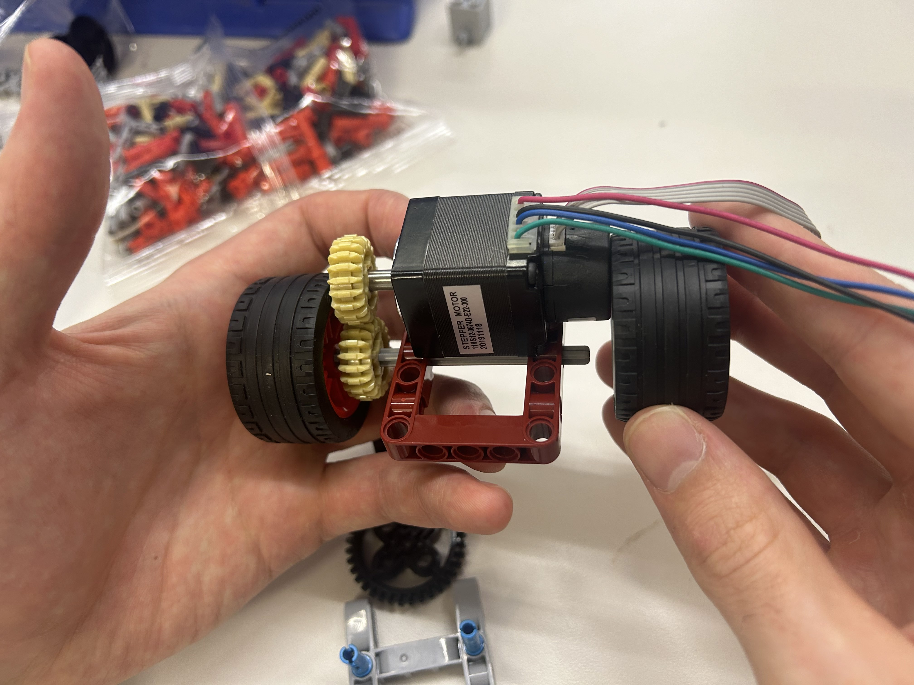

Our team was tasked with figuring out the locomotion aspect of the pipe robot.
To begin prototyping, we first worked on just trying to get a stepper motor to move. To do this, we built the following circuit:
We then used legos to start doing some very rough prototyping with our rotating steppor motor. We used a heat gun to attach lego wheels onto our motor to analyze its motion.
Then, using the legos, we started experimenting with different designs. We liked the idea of using a gear system with a front and back axle to rotate the wheels. We experimented with several different orientations of this system:
We then settled on what we believed this system should look like and captured an image:
When we reconvened, we began doing a rough prototype to simulate the motion. In this iteration, we wanted to mostly pay attention to housing our different components in an economical way. When everything was taped together, our prototype looked like this:
Here is a video of the rough prototype in action:
With the remaining time we had, we also constructed a quick circuit to get the servo moving so that we could incorporate the front two wheel design into our system.
Here is a video of the servo in action:
Going forward, we need to more effectively secure all of our pieces together and work on integrating our design with the snakehead team to accommodate the servo. We also need to begin 3D printing or laser cutting pieces to house the different components and secure them together more reliably. With this, we should accomplish a more polished prototype.